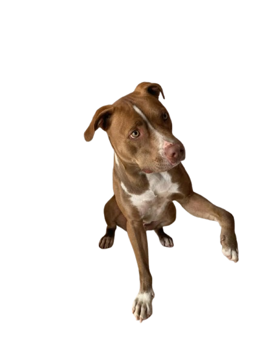

CACHORROS

Os cachorros são muito mais do que simples animais de estimação, eles são amigos leais e companheiros fiéis. Cheios de energia e alegria, eles oferecem carinho incondicional e uma presença que transforma qualquer ambiente. Na Americães, entendemos o quanto seu cachorro é especial, por isso oferecemos tudo o que ele precisa para viver com saúde, conforto e diversão. De rações de alta qualidade a brinquedos e acessórios, nossa missão é garantir que seu amigo de quatro patas tenha o melhor, porque ele merece todo o amor e cuidado que você pode oferecer.
GATOS

Os gatos são companheiros tranquilos e misteriosos, capazes de encher nossos dias com carinho e encanto. Com suas personalidades únicas, eles criam laços especiais, oferecendo afeto de uma forma silenciosa e cheia de graça. Na Americães, sabemos como é importante cuidar do bem-estar do seu gato. Por isso, oferecemos produtos de qualidade para que ele tenha uma vida saudável e feliz. Desde rações nutritivas até brinquedos e acessórios que atendem às suas necessidades, nossa missão é garantir que seu gato tenha todo o conforto e amor que ele merece.
AVES
As aves são seres fascinantes, cheios de cores, cantos e uma energia contagiante. Com suas personalidades curiosas e sociáveis, elas tornam o ambiente mais alegre e vibrante. Seja com seus cantos melódicos ou suas brincadeiras, as aves trazem vida para qualquer espaço. Na Americães, entendemos a importância de oferecer os cuidados certos para esses pequenos amigos. Por isso, oferecemos uma variedade de produtos, como rações balanceadas, brinquedos que estimulam suas habilidades e acessórios que garantem conforto e bem-estar. Nosso compromisso é garantir que sua ave tenha uma vida saudável, divertida e cheia de carinho.
PEIXES
Os peixes são criaturas encantadoras que trazem tranquilidade e beleza para qualquer ambiente. Com seus movimentos suaves e cores deslumbrantes, eles criam um ambiente relaxante e sereno. Seja em um aquário decorado ou nadando livremente, os peixes têm uma maneira única de encantar. Na Americães, sabemos como é importante cuidar bem dos seus peixes. Oferecemos uma ampla gama de produtos, incluindo rações especializadas, acessórios para aquários e itens para garantir a saúde e o bem-estar dos seus pequenos amigos aquáticos. Tudo para que seu peixe viva de forma saudável e vibrante, proporcionando momentos de paz e harmonia no seu lar.